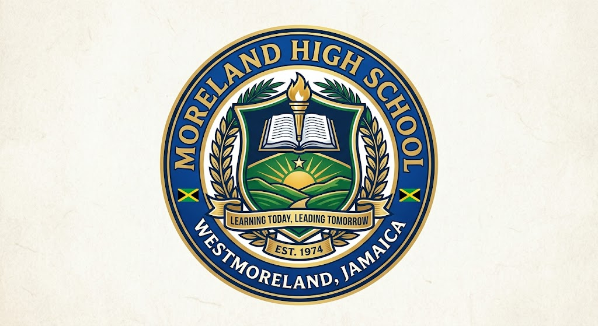

Moreland High School
Learning Today, Leading Tomorrow
Location: Moreland, Westmoreland, Jamaica

About Our School
Moreland High School is committed to providing quality education and helping students develop the knowledge, skills, and values needed for a successful future.
Our School Information
Moreland High School offers students a supportive learning environment with qualified teachers, modern facilities, and opportunities for academic and personal growth.
Subjects Offered
- Mathematics
- English Language
- Information Technology
- Science
- Social Studies
School Facilities
- Computer Laboratory
- Science Laboratory
- Library
- Sports Facilities
- Classrooms with Learning Resources
School Achievements
- Grade 7 – 9 (Lower School): $65,000.00
- Grade 10 – 11 (Upper School): $70,000.00
- Grades 12 – 13 (Sixth Form): $90,000.00
- Early Full – 6% discount
- Late Full – No discount and no penalty
- TWO PART – 3% discount
- Three Part – 1% interest on tuition cost
- Football
- Netball
- Debate Club
- Music Club
- Environmental Club
- Art Club